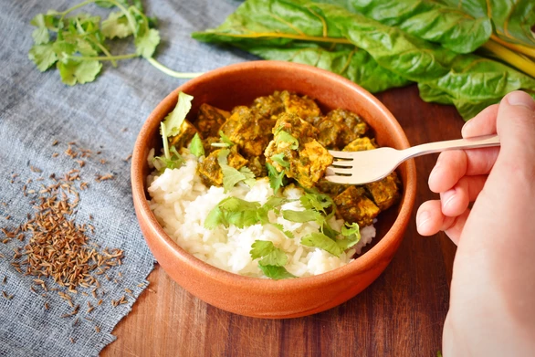

"Indian recipe" & "low FODMAP" are rarely uttered in the same sentence, but here they are! This was based on one of my favourite dishes of my pre-vegan pre-low FODMAP days, Palak Paneer. Despite the lack of garlic, onion or a tonne of baby spinach it turned out surprisingly well, if I do say so myself!
